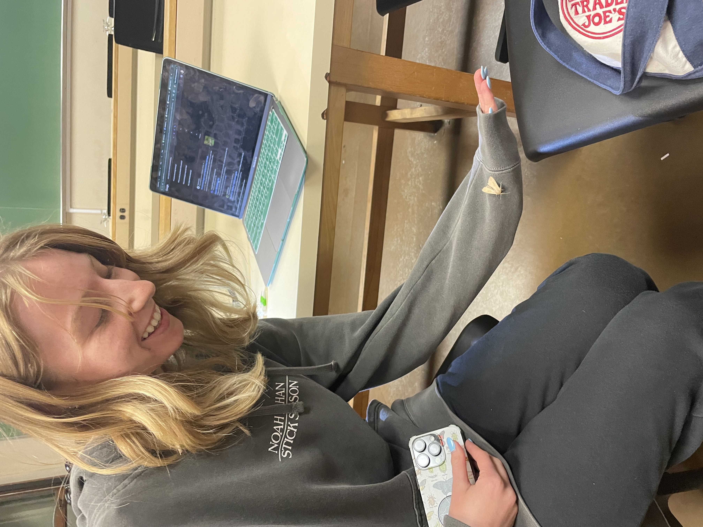

Bombardier beetles have a unique and highly effective defense mechanism where they spray a hot, noxious chemical from their rear to deter predators. This explosive chemical weapon is not only startling but can also be harmful to attackers, making it a potent deterrent in the insect world. Inside their abdomen, the beetles store two separate chemicals—hydroquinone and hydrogen peroxide—in specialized reservoirs. These compounds are kept isolated until the beetle perceives a threat, at which point they are rapidly mixed in a specialized reaction chamber. The chemical reaction between hydroquinone and hydrogen peroxide is catalyzed by enzymes and reacts violently, generating intense heat and producing a near-boiling, pressurized gas. This reaction is so exothermic that the liquid can reach temperatures of around 100°C (212°F), effectively turning the beetle into a tiny chemical cannon. The explosion creates a powerful, pulsating jet of acidic spray, which is expelled through a small nozzle-like opening at the rear of the abdomen. What's even more remarkable is the beetle's ability to aim this defensive blast with precision, thanks to a swiveling tip on its abdomen. This allows the beetle to hit targets in almost any direction—even over its own back. Scientists have studied this mechanism not only for its biological ingenuity but also for its potential applications in engineering, particularly in micro-scale propulsion and chemical delivery systems. The bombardier beetle stands as a prime example of nature’s ability to engineer complex systems for survival.
Latest News
New Scarab Beetle Species Discovered in Wyoming, Named After Professor Brust
In an exciting entomological breakthrough, a new species of scarab beetle has been discovered by Chadron State College Biology Professor Dr. Mathew Brust. The beetle, now officially named Lichnanthe brusti, was first collected by Brust in the sand dunes of south-central Wyoming in June 2022. Known for its bee-like wing covers and flight patterns, the beetle’s unusual appearance led Brust to suspect it was a new species. After further investigation and consultation with scarab beetle expert Dr. Matt Paulsen, the beetle was confirmed as a new member of the bumblebee scarab beetle family. The discovery was published in the journal Insecta Mundi in March 2024. In addition to Lichnanthe brusti, the research also led to the identification of another new beetle species, Licnanthe bruni, from a specimen collected over a century ago in Nebraska. Brust, an avid naturalist with a keen eye for unique insects, is thrilled by the recognition, calling the discovery a testament to the value of careful collection and observation. "You never know what might be important," Brust said, reflecting on the serendipity of the find.
Read MoreSeven New "Walking Leaf" Species Discovered, Enhancing Our Understanding of Camouflage & Biodiversity
 In an exciting new discovery, researchers have identified seven previously unknown species of leaf insects, commonly known as "walking leaves," known for their remarkable ability to mimic leaves and twigs. These insects, found in India, blend seamlessly into their environment, making them nearly invisible to predators and researchers alike.
The discovery, published in the journal ZooKeys, relied on genetic analysis to differentiate the new species from previously recognized ones. Lead researcher Dr. Sarah Bank-Aubin of the University of Göttingen explained that the new species were often mistaken for a larger southeast Asian group due to their similar appearance.
While stick and leaf insects are diverse—there are about 3,500 known species—only about 100 are classified as leaf insects. This study not only sheds light on the complexity of insect taxonomy but also underscores the importance of protecting these unique creatures. As Dr. Bank-Aubin notes, the loss of these Indian leaf insects would mean the extinction of an entire species, emphasizing the need for conservation efforts.
In an exciting new discovery, researchers have identified seven previously unknown species of leaf insects, commonly known as "walking leaves," known for their remarkable ability to mimic leaves and twigs. These insects, found in India, blend seamlessly into their environment, making them nearly invisible to predators and researchers alike.
The discovery, published in the journal ZooKeys, relied on genetic analysis to differentiate the new species from previously recognized ones. Lead researcher Dr. Sarah Bank-Aubin of the University of Göttingen explained that the new species were often mistaken for a larger southeast Asian group due to their similar appearance.
While stick and leaf insects are diverse—there are about 3,500 known species—only about 100 are classified as leaf insects. This study not only sheds light on the complexity of insect taxonomy but also underscores the importance of protecting these unique creatures. As Dr. Bank-Aubin notes, the loss of these Indian leaf insects would mean the extinction of an entire species, emphasizing the need for conservation efforts.
Outreach Programs
Encouraging Entomological Outreach: Inspiring the Next Generation of Insect Enthusiasts
As a passionate entomologist, one of the most rewarding aspects of my work is sharing my love for insects with others. Whether it’s through field trips, museum visits, or hands-on classes in insect preservation, I strive to make the fascinating world of bugs accessible and exciting for everyone. Encouraging entomological outreach is essential not only for fostering a deeper appreciation of biodiversity but also for inspiring future scientists and conservationists. Building a Lifelong Love for Entomology: Through field trips, museum visits, and preservation classes, I aim to inspire a lifelong love for entomology in people of all ages. These experiences show participants that insects are not just pests but fascinating, essential creatures that are worthy of study and protection. Whether you’re a child spotting a ladybug for the first time or an adult learning about insect conservation, the goal is to spark curiosity and wonder. Encouraging entomological outreach fosters a sense of connection to the natural world and helps cultivate the next generation of scientists, conservationists, and insect enthusiasts. I believe that by providing opportunities to engage with insects in meaningful ways, we can foster a deeper understanding of biodiversity and the critical role insects play in maintaining healthy ecosystems. With continued outreach efforts, we can inspire more people to explore the world of entomology and contribute to the preservation of these incredible creatures.
❮
❯
1 / 3

2 / 3
3 / 3
Field trips are an invaluable tool in entomological outreach. There's no better way to learn about insects than to observe them in their natural habitats. I organize trips to local nature reserves, forests, and even urban gardens, where participants can see a wide variety of insects in action. These outings serve multiple purposes. They introduce participants to the rich diversity of species in their own backyard and highlight the role insects play in ecosystems. By guiding participants on how to use field equipment like magnifying glasses, insect nets, and collection jars, I help them develop practical skills for identifying different species and understanding their behaviors. Most importantly, field trips break down the often intimidating world of entomology into something tangible and exciting. When participants spot their first butterfly or spot a rare beetle, they’re not just learning about insects—they’re discovering the joys of scientific exploration. Museum visits are another key part of my outreach efforts. Museums offer the unique opportunity to see the wide array of insects that live on our planet, many of which may be difficult to spot in the wild. I collaborate with local museums to arrange guided tours where participants can view impressive insect collections, from rare specimens to preserved examples of insects from around the world. These visits are a fantastic way to teach participants about the history of entomology, the science of insect classification, and how museum collections serve as vital resources for research and conservation. It also opens up conversations about the challenges insects face, such as habitat loss and climate change, and the importance of conservation efforts. By allowing participants to ask questions and engage with real specimens, museums turn learning into an interactive experience. Another key component of my outreach efforts is offering hands-on classes focused on insect preservation. These workshops introduce participants to the art of collecting and preserving insects, whether for scientific study or personal collections. I teach techniques like pinning, mounting, and using preservation fluids, providing both the skills and knowledge needed to handle insects respectfully. Through these classes, I emphasize the importance of ethical collection practices, teaching participants about the impact of over-collection and the importance of respecting natural habitats. I also stress the value of preserving specimens for future research, highlighting how important it is to document insect species for both educational and conservation purposes. By learning about insect preservation, participants gain a deeper understanding of the meticulous work that goes into building museum collections and research databases. They also develop a new appreciation for the complexity and beauty of the natural world.
Identification Guide
| Big 5 Orders | Order | Examples | Traits to Distinguish | Diversity |
|---|---|---|---|---|
| Coleoptera: Beetles | Ladybugs, Scarabs, Weevils, Firefly | Known for having two pairs of wings, with the forewings hardened into protective sheaths called elytra | Over 300,000 described species. Approximately 160 families. | |
| Hymenoptera: Bees, Ants, Wasps | Bumble Bee, Yellow Jacket, Sawflies | Social insects; characterized by their membranous wings and specialized mouthparts for feeding and defense | Over 150,000 described species. Close to 100 families. | |
| Lepidoptera: Butterflies & Moths | Monarch, Atlas, Morpho, Luna, Swallowtail | Known for scaled wings & coiled, siphoning mouthparts; butterflies fly during the day, moths at night. | Around 180,000 described species. Approximately 125 families. | |
 |
Diptera: Flies | Mosquito, Blow, Fruit, Crane, Soldier | Characterized by having one pair of wings; known for their diverse feeding habits (ex: blood, nectar) | Around 150,000 described species. Approximately 150 families. |
| Hemiptera: True Bugs | Cicada, Aphid, Leaf Hopper, Shield, Striders | Distinguished by beak-like mouthparts used for piercing and sucking plant juices. | Over 80,000 described species. Approximately 140 families. |
Insect Stories
Caddisfly larvae are remarkable aquatic insects known for their unique behavior of constructing protective cases underwater using materials like sand, small pebbles, plant fragments, or even tiny shells. These larvae live in freshwater environments such as streams, rivers, and ponds, where they scavenge the surrounding materials to create their distinctive homes. To assemble these cases, the larvae produce a type of silk from glands located near their mouths, which functions like a natural adhesive. This silk binds the chosen materials together into sturdy, tube-like structures that the larvae can carry with them as they move. The resulting cases serve multiple important functions. Primarily, they act as a form of armor, shielding the soft-bodied larvae from predators such as fish and larger insects. In addition to protection, the cases provide excellent camouflage, blending in perfectly with the substrate of the streambed and making the larvae nearly invisible to the untrained eye. This clever use of local materials not only increases their chances of survival but also reflects a fascinating form of behavioral adaptation. Interestingly, the design and composition of each larva’s case are closely tied to its immediate surroundings. Because the larvae use whatever materials are readily available, no two cases are exactly alike—each is a unique structure that mirrors the microhabitat it was built in. Some researchers even use caddisfly cases as indicators of environmental health, since the presence and condition of these cases can reflect changes in water quality and biodiversity. The ingenuity of caddisfly larvae showcases the incredible resourcefulness of life underwater and highlights the subtle complexity of aquatic ecosystems.
In the heart of the forest, male stag beetles engage in fierce, dramatic battles, their impressive antler-like mandibles locked in an intense test of strength and dominance. These towering jaws, which resemble the antlers of a stag and give the beetle its name, are not used for feeding but have evolved specifically for these high-stakes confrontations. The duels are a spectacular display of raw power and determination, driven by a single purpose: to win the favor of a nearby female. Unlike many animal battles that are fought over territory or resources, these clashes are all about securing a chance to reproduce. The battles take place on tree trunks, fallen logs, or open patches of forest floor, often attracting the attention of other beetles—and even curious onlookers. With every push, lift, and shove, the combatants try to unbalance and flip one another using their oversized jaws. Sometimes the fights are over in seconds; other times, they can last several minutes as the rivals lock together and test each other's strength to the limit. These encounters, though intense, rarely end in serious injury—victory is typically decided when one beetle is thrown or forced to retreat. The victorious male earns the right to mate, a reward for his physical prowess and persistence. This ritual of competition ensures that only the strongest genes are passed on, playing a vital role in natural selection. The defeated male, meanwhile, may have to wait for another opportunity, or wander off in search of a different potential mate. Watching these beetles engage in their primal contest offers a glimpse into the timeless rhythm of the natural world—a dramatic yet elegant display of evolution in action, where strength, strategy, and instinct all collide in nature's enduring pursuit of love.